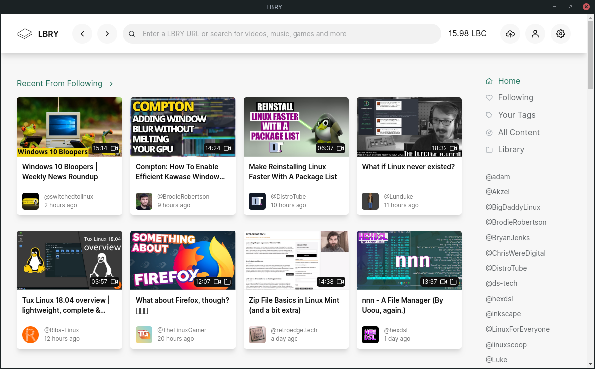

I love LBRY, a decentralized replacement for YouTube. I use it on a daily basis and I'm happy that more and more Linux creators are appearing there. Here I will maintain a list of channels related to Linux and more broadly, open source software.
Table of contents: Destination Linux Network; Various; Gaming; Meetings; Privacy; Arch-related; Tutorials; Distro overviews; Retro tech; Software
DLN is one of the most important Linux communities out there. The network has accumulated a lot of cool podcasts and video channels under its wings – Destination Linux, Linux for Everyone, This Week in Linux, and the Ask Noah Show, DasGeek, Hardware Addicts and TuxDigital.
@destinationlinux – This is the network's collective channel. You are one click away from subscribing to all shows.
@LinuxForEveryone – Jason Evangelho, the host of the podcast of the same name, has also been recording videos for some time. Jason is very new in the world of Linux, but he is full of passion, which is infectious.
@tuxdigital – Speaking of. Michael Tunnell aka TuxDigital has a separate channel where you can find both his podcast and sometimes some additional videos.
@dasgeek – A solo channel of Ryan from Destination Linux. He focuses on education of hardware, software, security, and privacy.
@Akzel – He talks about Linux, about elementary OS among other distros.
@LinuxLounge – This channel covers all things Linux. Rarely updated.
@pizzalovingnerd – He is a young Linux user and programmer from Seattle.
@ChrisWereDigital – He talks about open source software and Linux.
@TheLinuxGamer – Gardiner Bryant is a young, friendly guy whose channel has long since gone beyond playing on Linux. He loves GNOME and is very excited about the vision of a smartphone with pure Linux.
@hexdsl – On the HexDSL channel you will find a lot of videos about playing on Linux. But also about Linux itself and the tools you use in the terminal.
@BigDaddyLinux – Here you can watch virtual LUG called 'Big Daddy Linux' and 'Linux Spotlight', a show where Rocco, the host, talks to various people from the Linux community.
@tuxfoo – He talks about Linux and open source in general, with a strong emphasis on regaining privacy on the internet.
@adam – As he writes himself: I just talk in my own rhythm about topics that interest me, mostly free software, technology, simplicity, digital security, privacy and graphical design.
@DistroTube – Regularly updated channel run by Derek Taylor, a Vim lover, tiling window manager and terminal-based workflow advocate.
@Luke – The channel run by Luke Smith. You'll find a variety of Linux videos there, including i3 setting up, shell scripts, and much more. From his tutorials I once learned the basics of LaTeX.
@BrodieRobertson – Guy from South Australia. His channel is about getting the most of my computer with Arch Linux.
@alecaddd – A channel run by Alessandro Castellani, nerdy Italian guy living in Vancouver and native Linux app developer. He has a great tutorial series on how to create an apps using Vala & Gtk.
@tjfree – He has some more great tutorials covering GIMP, Inkscape, Darktable, Audacity, Scribus, Kdenlive and other open source software.
@linuxscoop – You'll find many distro overviews there and some desktop environments overviews too. And sometimes how-tos.
@Riba-Linux – Awesome distro overviews.
@Lunduke – Bryan Lunduke likes the yesterday's technology: old computers, internet without JavaScript and social media, DOS games.
@retroedge.tech – The About tab of this channel describes it best: Having fun with Linux and old-ish hardware.
@inkscape – Inkscape has recently been given an official channel. So far they've uploaded one video about bug reporting, but maybe this will change and we'll get some cool tutorials there.
If you know another LBRY channel about Linux, open source or free-culture, please suggest it here or send me an e-mail. I'll update the list.